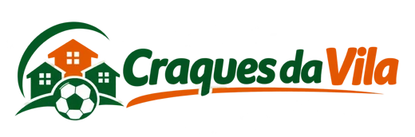
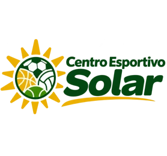
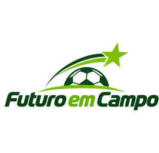

Financeiro no controle
Saiba quem pagou, acompanhe os atrasos e organize suas cobranças.
Ver financeiro ↗Mais tempo para o esporte.
Mais controle para sua escola.
Organize mensalidades, alunos, turmas e contratos em um só sistema, feito para escolinhas de esporte.
Da matrícula ao financeiro, tudo conectado para você cuidar do que mais importa: seus atletas.
Saiba quem pagou, acompanhe os atrasos e organize suas cobranças.
Ver financeiro ↗Alunos, responsáveis, professores e turmas em um único lugar.
Ver cadastros ↗Contratos, carteirinhas e documentos sempre à mão.
Ver contratos ↗Entre conferir pagamentos, responder responsáveis e organizar turmas, sobra pouco tempo para pensar no próximo passo da escola.
O Pé na Grama reúne essa rotina em um só lugar. Você acompanha a gestão e volta sua atenção para quem está em campo.
Ver como funciona ↗Cobranças com Pix geradas e acompanhadas no painel financeiro: uma visão clara de quem pagou e de quem precisa de acompanhamento.


Encontre alunos, responsáveis e contatos no mesmo cadastro.

Alunos e responsáveis, planos e contatos. Tudo organizado para o dia a dia.
Telas do sistema com dados fictíciosToque em uma tela para ampliar.
Uma experiência com a cara da sua escola, do painel de gestão à área do aluno e do responsável.
Sua logo aparece no painel, na carteirinha, nas artes de aniversário e na área do responsável. Veja exemplos de identidades de escolas.



Pequenos atrasos somam um grande valor. Simule o total mensal de mensalidades em atraso na sua escola.
Simulação ilustrativa. Não representa garantia de recuperação.Conheça a plataforma e veja como ela se encaixa na rotina da sua escola.
Ficou alguma dúvida? ↓Planos a partir de
Não. As telas do sistema mostram a gestão de diferentes modalidades, como futebol, futsal, vôlei e natação.
Sim. A área do aluno tem acesso a dados cadastrais, pagamentos, carteirinha, horários e autorizações, conforme a configuração da escola.
Sim. Você pode explorar as telas e personalizar a demonstração abaixo com o nome da sua escola. Consulte as condições do teste antes de contratar.
O sistema permite enviar lembretes com Pix pelo WhatsApp da escola e acompanhar pagamentos e atrasos no painel financeiro. As condições de integração devem ser confirmadas na contratação.
Teste grátis por 14 dias, com acesso completo. Sem cartão, sem esperar proposta.